صفحه ۱۶۰
شبکهبندی صفحه (Grid Systems) بوتاسترپ دارای یک سیستم شبکهبندی با نام Grid است که توسط Flexbox ایجاد شده است و امکان تقسیم پهنای صفحه را به 12ستون فراهم میکند. هر سلول در این شبکه میتواند محتوای بخشی از صفحه را درون خود نگه دارد. سیستم Grid امکان گروهبندی ستونها را برای ایجاد ستونهای عریضتر فراهم میکند بهطوریکه فضای کافی برای قرار دادن محتوا درون یک ستون موجود باشد. سیستم Grid واکنشگرا است و بسته به اندازه صفحه، ستونها را بهطور خودکار مرتب میکند.
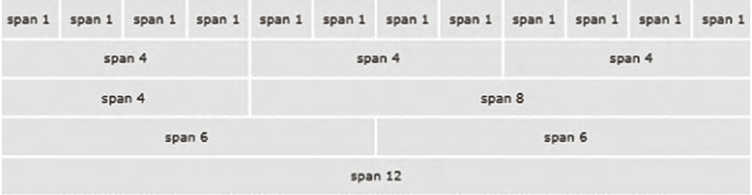
استفاده از کلاسهای شبکهبندی (rows و columns) برای ایجاد سطرها و ستونهای شبکه از کلاسهای row و col استفاده میشود. کلاس row باعث میشود سلولهای شبکه در یک خط افقی قرار بگیرند و فواصل مناسب بین آنها اعمال شود. پهنای ستونها بهصورت خودکار توسط پارامتر size در نام کلاس col مشخص میشود. شکل کلی کلاس col به صورت -col breakpoint-size است، پارامتر breakpoint به اندازه دستگاه (sm, md, lg,xl, xxl) و پارامتر سایز به اندازه ستون اشاره دارد. بهعنوان مثال col-sm-3 یعنی اشغال سه ستون از 12 ستون در تمام دستگاههای بزرگتر یا مساوی 576 پیکسل.
شبکه سطرها و ستونها باید درون یک عنصر نگهدارنده قرارگیرد. بوتاسترپ دارای دو کلاس با اسامی container و container-fluid است که برای ایجاد نگهدارنده استفاده میشوند. تفاوت این دو نگهدارنده در میزان حاشیه چپ و راست آنهاست. کلاس container یک فضای خالی با پهنای مساوی در چپ و راست عنصر نگهدارنده ایجاد میکند، در حالیکه کلاس container-fluid تمام پهنای صفحه را اشغال میکند.
مثال
در مثال زیر یک سطر با سه ستون ایجاد میشود که سهم هر ستون برابر 4 از 12 خواهد بود:
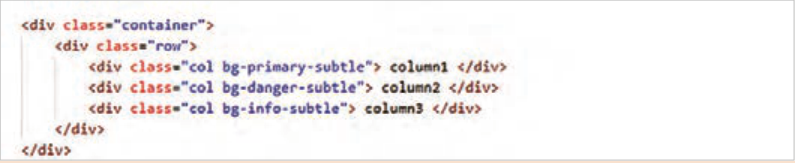
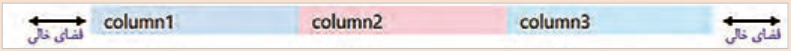
صفحه ۱۶۱
ستونهای مثال صفحه قبل در تمام دستگاهها در کنار هم نمایش داده میشوند. اگر به جای کلاس col از کلاس col-sm-4 استفاده شود، این ستونها در تمام دستگاههای بزرگتر یا مساوی 576 پیکسل در کنار هم خواهند بود، اما در دستگاههای کوچکتر، بهصورت پشته روی هم قرار میگیرند.
پارامترهای breakpoint و size مشخص میکنند که نحوه نمایش ستونها در دستگاههای مختلف (موبایل، تبلت، دسکتاپ) چگونه باشد.
سیستم grid دارای کلاسهای مختلفی برای اندازه ستونها در دستگاههای مختلف است که در جدول زیر به آنها اشاره شده است:
جدول8 پارامترهای کلاس-col برای دستگاههای مختلف
پارامتر
کاربرد
توضیح برای دستگاههای بسیار کوچک پهنای صفحه کمتر از 576 پیکسل-col
بدون پیشوند }sm-{nبرای دستگاههای کوچک پهنای صفحه بزرگتر یا مساوی 576 پیکسل-col-sm }md-{nبرای دستگاههای متوسط پهنای صفحه بزرگتر یا مساوی 768 پیکسل-col-md }lg-{nبرای دستگاههای بزرگ پهنای صفحه بزرگتر یا مساوی 992 پیکسل-col-lg }xl-{nبرای دستگاههای بزرگ پهنای صفحه بزرگتر یا مساوی 1200 پیکسل-col-xl }xxl-{nبرای دستگاههای بزرگ پهنای صفحه بزرگتر یا مساوی 1400 پیکسل-col-xxl {n} عددی از 1 تا 12 است. منظور از n تعداد ستونهایی است که یک عنصر از ۱۲ ستون grid اشغال میکند.
مثال
__4 و 12 __8 ایجاد میشود:
در مثال زیر یک ردیف با دو ستون در دو اندازه 12
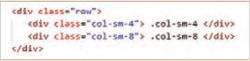
__4
این دو ستون در دستگاههایی با پهنای بزرگتر یا مساوی 576 پیکسل در کنار هم و با اندازههای 12 __8 نمایش داده میشوند. اما در دستگاههای کوچکتر، محتوای ستونها روی هم قرار میگیرند و و 12 در نتیجه هر ستون 100% پهنای صفحه را اشغال خواهد کرد.
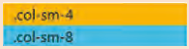
پهنای دستگاه: بزرگتر یا مساوی 576 پیکسل پهنای دستگاه: کمتر از 576 پیکسل
صفحه ۱۶۲
مثال
برای ایجاد طرحبندیهای پویا و انعطافپذیر میتوان کلاسهای فوق را بهصورت ترکیبی استفاده نمود. مانند مثال زیر:
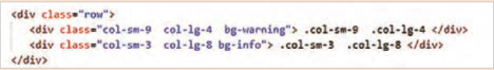
این دو ستون در دستگاههای کوچکتر از 576 پیکسل زیر هم نمایش داده میشوند؛ در دستگاههایی
__9 و 12 __3 و در دستگاههای
با پهنای بزرگتر از 576 پیکسل و کوچکتر از 992 پیکسل در اندازه 12
__4 و 12 __8 نمایش داده میشوند.
بزرگتر با اندازه 12
طرحبندی فوتر صفحه وب
کار کارگاهی
در فایل index.html، ناحیه فوتر را به شکل زیر بعد از برچسب <main/> ایجاد کنید:
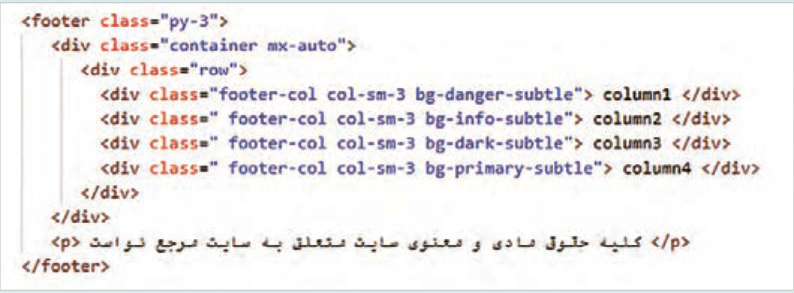
برای محتوای ستون اول از کد زیر استفاده کنید:
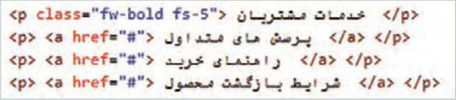
ستون دوم مربوط به آیکن شبکههای اجتماعی است. برای بهدست آوردن کد آیکنها وارد آدرس .icons getbootstrap.com شوید و در انتهای این صفحه، در بخش CDN لینک فایل CSS آیکنها را کپی کنید و در بخش <head> بچسبانید. این لینک به شکل زیر است:
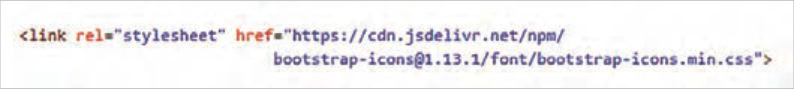
صفحه ۱۶۳
سپس به ابتدای صفحه آیکنها برگردید و برای جستوجوی آیکن، در کادر ilterf نام شبکه اجتماعی مورد نظر را بنویسید. بعد از ظاهر شدن آیکنها روی یک مورد به دلخواه کلیک کنید تا صفحه اختصاصی آیکن باز شود. در بخش icon font کد html را کپی کنید و آن را در ستون دوم فوتر بچسبانید. محتوای ستون دوم را به شکل زیر تنظیم کنید:
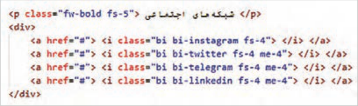
در ستون سوم کد شکل زیر را وارد کنید:
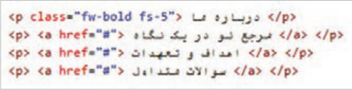
در ستون چهارم کد شکل زیر را بنویسید:
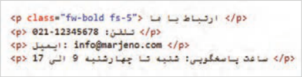
برای حذف زیرخط پیوندها و تنظیم رنگ و اندازه متون فوتر، استایل شکل زیر را به فایل styles.css اضافه کنید:
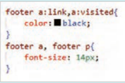
برای تنظیم استایل پاراگراف «کلیه حقوق مادی و معنوی ....» از کد شکل زیر استفاده کنید:
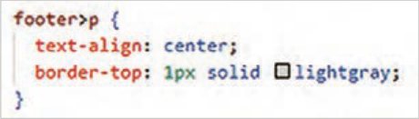
صفحه ۱۶۴
این استایل متن پاراگراف را در وسط صفحه به همراه یک خط در بالای آن نمایش میدهد. استایل فوق فقط روی پاراگراف آخر اعمال میشود، چرا که تنها این پاراگراف فرزند مستقیم عنصر footer است.
برای تغییر تراز عناصر در نمای موبایل و جابهجا شدن محل نمایش پاراگراف آخر، استایل شکل زیر را اضافه کنید:
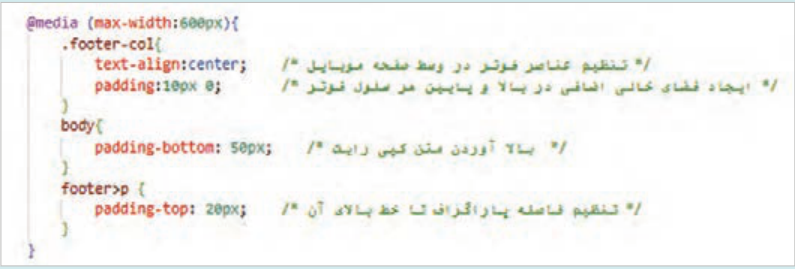
بهدلیل حضور bottom-navbar در پایین صفحه، امکان مشاهده پاراگراف انتهایی فوتر در نمای موبایل فراهم نیست؛ به همین دلیل موقعیت پاراگراف توسط ویژگی position و bottom تنظیم شده است.
بعد از اینکه همه عناصر بهدرستی در جای خود قرار گرفتند، رنگ زمینۀ ستونها را حذف کنید.
واکنشگرایی و کلاسهای مرتبط واکنشگرایی بهمعنای توانایی یک صفحه وب برای تغییر و سازگاری با اندازهها و ویژگیهای مختلف دستگاهها و صفحه نمایشها است. در یک طراحی واکنشگرا عناصر وبسایت بهطور خودکار اندازه و چیدمان خود را تغییر میدهند تا مناسب با اندازۀ صفحه نمایش کاربر باشند. هدف از انجام یک طراحی واکنشگرا (Responsive) این است که تجربه کاربری بهتری برای بازدیدکنندگان فراهم شود. برای طراحی عناصر واکنشگرا، روشهای مختلفی به شرح زیر موجود است:
Media query 1: برای تنظیم ویژگیهای عناصر در دستگاههای مختلف Flexbox 2: برای مدیریت نحوه چینش عناصر و فضای بین آنها CSS Grid 3: برای سازماندهی عناصر در سطرها و ستونها
4 استفاده از max-width به جای width برای اینکه تصاویر در اندازههای مختلف بهدرستی نمایش داده شوند:
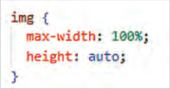
5 استفاده از واحدهای نسبی %، rem و em بهجای استفاده از واحدهای ثابت (مانند px)
6 بهکارگیری فریمورکهایی مانند بوتاسترپ که دارای کلاسهای واکنشگرای آماده هستند.
صفحه ۱۶۵
کنجکاوی
در مورد واحدهای rem و em تحقیق کنید.
کلاسهای واکنشگرای بوتاسترپ دارای موضوعات مختلفی هستند که در جدول ٩ به آنها پرداخته شده است:
جدول9 کلاسهای واکنشگرای بوتاسترپ
نوع کلاس
نام کلاسها
Container
container و container-sm، container-md، container-lg و...
Grid
row، row-cols، col، col-sm، col-md و col-lg و...
d-flex، d-*-flex، d-*-inline، d-*-block start، d-*-none مانند زیر:
Layout
d-sm-none، d-md-block، flex-md-row، justify-content-sm-center
align-items-md- و...
Margin
m-*-size مانند mb-sm-3 و mx-sm-1
Padding
p-*-size مانند py-sm-3، px-lg-3
d-none ، d-block،d-*-none، d-*-block
Display Classes
Image
img-fluid
Components
button، form، navbar، cards، carousel و...
در کلاسهای جدول 10 علامت * معادل sm،lg و... است.
جدول10 Breakpoints
کلاسBreakpoint
پهنای صفحه کمتر از xs576 px
sm
Small
576 px و بیشتر
md
768 px و بیشتر
lg
Large
992 pxو بیشتر
xl
1200 pxو بیشتر
xxl
1400 pxو بیشتر
Page 160
Page grid (Grid Systems) Bootstrap has a grid system named Grid that is created with Flexbox and makes it possible to divide the page width into 12 columns. Each cell in this grid can hold the content of part of the page. The Grid system makes it possible to group columns to create wider columns so that there is enough space to place content inside a column. The Grid system is responsive and, depending on the page size, rearranges the columns automatically.
Using grid classes (rows and columns) To create the rows and columns of the grid, the classes row and col are used. The class row causes the grid cells to be placed on a horizontal line and applies suitable spacing between them. The width of the columns is set automatically by the size parameter in the name of the col class. The general form of the col class is -col breakpoint-size; the breakpoint parameter refers to the device size (sm, md, lg,xl, xxl) and the size parameter refers to the column size. For example, col-sm-3 means occupying three columns out of 12 on all devices larger than or equal to 576 pixels.
The grid of rows and columns must be placed inside a container element. Bootstrap has two classes named container and container-fluid that are used to create a container. The difference between these two containers is the amount of left and right margin. The class container creates an empty space of equal width on the left and right of the container element, while the class container-fluid occupies the full width of the page.
Example
In the example below, a row with three columns is created in which each column’s share is 4 out of 12:
Page 161
The columns in the example on the previous page are displayed side by side on all devices. If instead of the class col the class col-sm-4 is used, these columns will be side by side on all devices larger than or equal to 576 pixels, but on smaller devices they stack on top of each other.
The breakpoint and size parameters determine how the columns are displayed on different devices (mobile, tablet, desktop).
The grid system has various classes for column size on different devices, which are referred to in the table below:
Table 8 Parameters of the -col class for different devices
Parameter
Usage
Explanation for very small devices page width less than 576 pixels -col
Without the prefix }sm-{n for small devices page width greater than or equal to 576 pixels -col-sm }md-{n for medium devices page width greater than or equal to 768 pixels -col-md }lg-{n for large devices page width greater than or equal to 992 pixels -col-lg }xl-{n for large devices page width greater than or equal to 1200 pixels -col-xl }xxl-{n for large devices page width greater than or equal to 1400 pixels -col-xxl {n} is a number from 1 to 12. By n is meant the number of columns that an element occupies out of the 12 grid columns.
Example
__4 and 12 __8 is created:
In the example below, a row with two columns in two sizes 12
__4
These two columns are displayed side by side on devices with a width greater than or equal to 576 pixels with the sizes 12 __8. But on smaller devices, the content of the columns stacks and and 12 as a result each column will occupy 100% of the page width.
Device width: greater than or equal to 576 pixels Device width: less than 576 pixels
Page 162
Example
To create dynamic and flexible layouts, you can use the classes above in combination. As in the example below:
These two columns are displayed one under the other on devices smaller than 576 pixels; on devices
__9 and 12 __3 and on devices
with a width greater than 576 pixels and smaller than 992 pixels in the size 12
__4 and 12 __8 are displayed.
larger with the size 12
Web page footer layout
Workshop
In the file index.html, create the footer area as shown below after the <main/> tag:
For the content of the first column, use the following code:
The second column is for social network icons. To get the icon codes, go to the address .icons getbootstrap.com and at the end of this page, in the CDN section, copy the link to the icons CSS file and paste it in the <head> section. This link looks like the following:
Page 163
Then go back to the beginning of the icons page and, to search for an icon, type the name of the desired social network in the ilterf box. After the icons appear, click one of them as you prefer so that the icon’s dedicated page opens. In the icon font section, copy the html code and paste it in the second column of the footer. Set the content of the second column as follows:
In the third column, enter the code from the figure below:
In the fourth column, write the code from the figure below:
To remove the underline from links and set the color and size of the footer texts, add the style from the figure below to the file styles.css:
To set the style of the paragraph “All material and intellectual rights ....”, use the code from the figure below:
Page 164
This style displays the paragraph text in the center of the page with a line above it. The style above is applied only to the last paragraph, because only this paragraph is a direct child of the footer element.
To change the alignment of elements in the mobile view and move where the last paragraph is displayed, add the style from the figure below:
Because of the presence of bottom-navbar at the bottom of the page, it is not possible to see the final footer paragraph in the mobile view; for that reason, the position of the paragraph is set with the position and bottom properties.
After all elements are placed correctly in their positions, remove the background color of the columns.
Responsiveness and related classes Responsiveness means the ability of a web page to change and adapt to different sizes and features of devices and screens. In a responsive design, website elements automatically change their size and layout to suit the size of the user’s screen. The goal of doing a responsive design (Responsive) is to provide a better user experience for visitors. To design responsive elements, there are various methods as follows:
Media query 1: To set the properties of elements on different devices Flexbox 2: To manage how elements are arranged and the space between them CSS Grid 3: To organize elements in rows and columns
4 Using max-width instead of width so that images display correctly at different sizes:
5 Using relative units %, rem, and em instead of using fixed units (such as px)
6 Using frameworks such as Bootstrap that have ready-made responsive classes.
Page 165
Try this
Research the units rem and em.
Bootstrap’s responsive classes cover various topics that are addressed in Table 9:
Table 9 Bootstrap responsive classes
Class type
Class names
Container
container و container-sm، container-md، container-lg و...
Grid
row، row-cols، col، col-sm، col-md و col-lg و...
d-flex، d-*-flex، d-*-inline، d-*-block start، d-*-none مانند زیر:
Layout
d-sm-none، d-md-block، flex-md-row، justify-content-sm-center
align-items-md- و...
Margin
m-*-size مانند mb-sm-3 و mx-sm-1
Padding
p-*-size مانند py-sm-3، px-lg-3
d-none ، d-block،d-*-none، d-*-block
Display Classes
Image
img-fluid
Components
button، form، navbar، cards، carousel و...
In the classes in Table 10, the * mark is equivalent to sm, lg, and so on.
جدول10 Breakpoints
کلاسBreakpoint
Page width less than xs576 px
sm
Small
576 px and more
md
768 px and more
lg
Large
992 px and more
xl
1200 px and more
xxl
1400 px and more